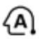
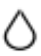

شرح الريموت والخصائص الإضافية — Remote & Special Functions
دوس على أي زرار في الريموت
هتظهر وظيفة الزرار والجملة اللي تقولها للعميل. زرار MODE والحرارة وسرعة المروحة بيتغيّروا على الشاشة مع كل ضغطة.
{{ dispPower }}
{{ dispTemp }}
FAN {{ dispFan }}
{{ dispExtra }}
LG
RESET
{{ cur.en }}
{{ cur.ar }}
{{ cur.desc }}
→

→

→
→
{{ stateText }}
قول للعميل
{{ cur.script }}
أوضاع التشغيل (بالترتيب مع كل ضغطة)
{{ m.ar }}
{{ m.desc }}
{{ extraTitle }}
{{ x.ar }}
{{ x.desc }}
الخصائص الإضافية (حسب الموديل) — ١. شغّل التكييف ٢. دوس FUNC. لحد ما تختار ٣. دوس SET/CANCEL
{{ funcStatus }}
بعض الخصائص ممكن تشتغل بشكل مختلف عن اللي ظاهر على شاشة الريموت.
بعض الوظايف مش موجودة في كل الموديلات، والزراير اللي عليها * ممكن تختلف حسب نوع الموديل.
Created by ICC QA & Training Team